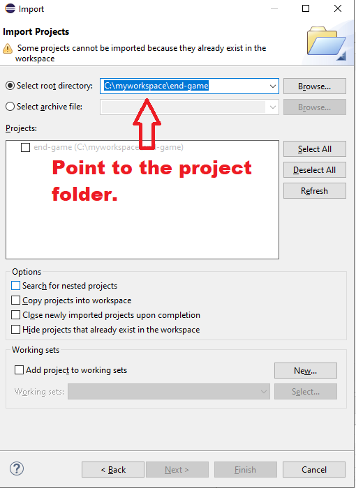
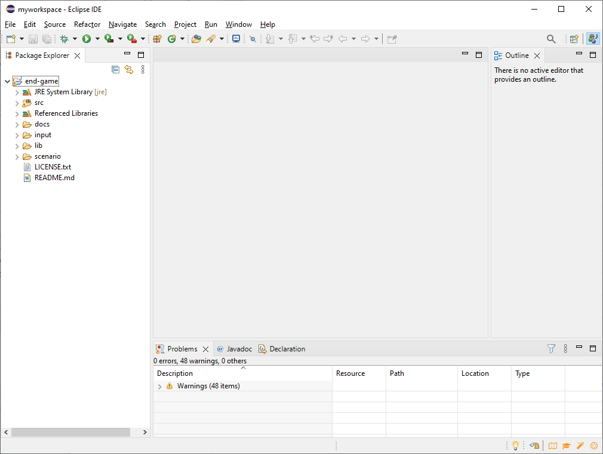
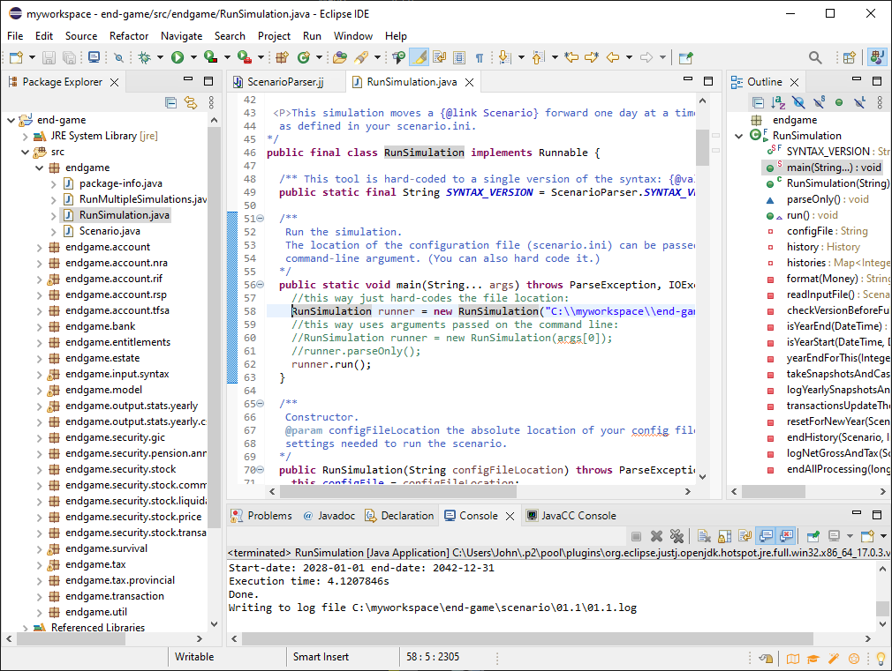

The main documentation is here.
When you launch Eclipse, you need to point to a workspace folder. A workspace folder contains project folders. Each project folder contains the source code for a project.
These instructions will use a workspace named:
C:\myworkspace\
An example setup:
C:\myworkspace\ [the workspace folder]
C:\myworkspace\end-game [the project folder for end-game]
./settings
docs
input
lib [the various files and folders in the end-game project]
scenario
src
.classpath
.gitignore
.project
LICENSE.txt
README.md
Your setup will be similar, except you can replace C:\myworkspace\ with something else, if you wish.
Next, you need to put the source code into the above folder structure:
Download the Eclipse installer.
Run the installer, and select Eclipse IDE for Java Developers (if it it prompts you about licenses, just accept the license):
Install Eclipse to a convenient location on your computer:

Launch Eclipse, and point it to the workspace directory you created earlier:

The first time you launch Eclipse, it will show you a welcome screen. Close the welcome screen:

Now you will see the main Eclipse window:

Click on Import Projects. Or, from the menu, select File -> Import...
Choose General -> Existing Projects into Workspace:

Point to the end-game project folder:

The result should look like this:


There are two ways of pointing to the scenario file. The easiest way is Style #1. If your workspace is different from C:\workspace\, then you will need to change one line to point to your actual workspace, and then save the change using the menu, File -> Save.
Finally, to run the scenario and generate its output, in the menu select Run -> Run As... -> Java application. That will generate logging output to something called the Console window. It will also generate new .csv files that summarize the results. The log file and .csv files are saved to the same directory as the scenario itself.
Once you have run RunSimulation the first time, there are shortcuts for re-running the most recent execution:
The RunMultipleSimulations class works in a similar way. The only difference is that it is passed a top-level folder that contains multiple scenario folders.
Of course, in order to run your new scenario, you will need to point the RunSimulation class to the scenario file, using the method described above.
There are two common kinds of error you may see. First, take the case of a syntax error in the scenario file, where you have mistakenly typed:
ban-withdrawal 925.00 on *-02which should be:
bank-withdrawal 925.00 on *-02When you try to run the code using that scenario file, you'll see an error message in the Console window, and it will tell you the exact location of the problem (in this case, line 230 and column 6 of the scenario file):
endgame.input.syntax.TokenMgrError: Lexical error at line 230, column 6. Encountered: "-" (45), after : "ban" at endgame.input.syntax.ScenarioParserTokenManager.getNextToken(ScenarioParserTokenManager.java:4529) at endgame.input.syntax.ScenarioParser.jj_ntk(ScenarioParser.java:1910) at endgame.input.syntax.ScenarioParser.transactions(ScenarioParser.java:1284) at endgame.input.syntax.ScenarioParser.all(ScenarioParser.java:194) at endgame.input.syntax.ScenarioParser.parseInput(ScenarioParser.java:70) at endgame.input.syntax.ScenarioParser.parse(ScenarioParser.java:55) at endgame.RunSimulation.readInputFile(RunSimulation.java:168) at endgame.RunSimulation.run(RunSimulation.java:105) at endgame.RunSimulation.main(RunSimulation.java:71)This is called a stack trace.
A different sort of error can occur later, after the scenario file has been successfully read and parsed. An example is an operation that's not allowed for some reason. For instance, if you try to withdraw too much money from your bank account, you'll see this error message in the Console window:
java.lang.RuntimeException: You're trying to withdraw 85000.00 but you only have 7130.27. at endgame.bank.BankAccount.withdrawCash(BankAccount.java:32) at endgame.bank.BankDepositWithdrawal.execute(BankDepositWithdrawal.java:30) at endgame.transaction.Transactional.executeOnDate(Transactional.java:34) at endgame.RunSimulation.transactionsUpdateThe(RunSimulation.java:240) at endgame.RunSimulation.run(RunSimulation.java:123) at endgame.RunSimulation.main(RunSimulation.java:71)
To install the JavaCC plugin into Eclipse: